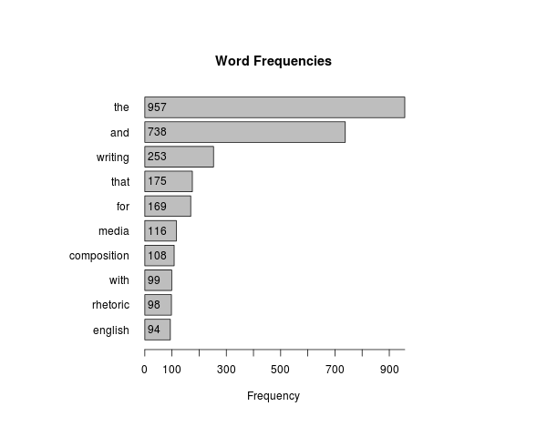

Data Literacy, Statistical Rhetoric, and Information Design
by Aaron Beveridge
Introduction
As visual rhetoric and design studies turn their attention to data visualization and infographic media, much work remains to understand quantitative reasoning and statistical analysis as rhetorical constructions. In “Rhetorical Numbers: A Case for Quantitative Writing in the Composition Classroom,” Joanna Wolfe argues that rhetorical approaches to quantitative reasoning remain largely overlooked in writing studies classrooms. As Wolfe explains, “Rather than reject quantitative argument out of hand, contemporary rhetoricians need to train their students to recognize the unethical, deceptive, and misleading as well as thoughtful, instightful, and revealing applications of quantitative rhetoric” (454). Beyond the concerns of the writing classroom, data literacy is of crucial importance to public discourse and digital rhetoric broadly conceived. Since 2012, the White House has been following through with President Obama’s “Big Data Initiative” which attempts to provide “consumers with the full landscape of information they need to make optimal energy decisions; to enabling civil engineers to monitor and identify at-risk infrastructure; to informing more accurate predictions of natural disasters; […] to advance national goals such as economic growth, education, health, and clean energy” (cite). As more and more of traditional “analyses” are replaced with data “analytics”1, critically aware citizens must be provided with (1) the access to underlying datasets on which analytics are built, and with (2) the statistical methods used to process, analyze, and visualize the data. However, working to improve access to datasets and methodologies is meaningless if the available means of statistical analylsis are not understood as inventive, persuasive forms of argumentation.
This article provides examples for how the choices made during data processing and statistical analysis effect the visualizations those analyses produce. The use of the term choice here suggests more variablility and indeterminacy than what is often implied by the concept of statistical reasoning, but the range of possibilities—the notion that data analysis is inventive and experimental—is an essential analogue between rhetoric and statistical reasoning. As John W. Tukey notes in his now canonical text Exploratory Data Analysis, “many of the indications to be discerned in bodies of data are accidental or misleading. […] To fail to collect all appearances because some—or even most—are only accidents would, however, would be gross misfeasance.” Yet, as Tukey explains, exploratory data analysis “can never be the whole story, but nothing else can serve as the foundation stone—as the first step” (3). XXXSign postXXX Often, when rhetoric and statistics are compared, it is the inherent “deceptive” nature of “facts” that are questionedXXXget quote from FahnestockXXX. However, in this article I investigate XXXhow something does something rhetoricalXXX.
While Wolfe uses the phrase “quantitative rhetoric,” I prefer to use the broader concept of “statistical rhetoric” because this allows for both quantitative and qualitative approaches to data literacy. Rhetoric and statistics have a lot in common. Both frameworks provide wide-ranging methods of analysis and knowledge-construction that may be applied to an endless array of topics and content for research. Because of this commonality, the two are active in many (if not all) disciplines in the academy. While rhetoric is often associated with qualitative research, and statistics with quantitative research, they frequently cross over these boundaries. For example, the questions in a survey may be rhetorically constructed to carefully recuce (or account for) participant bias, but the results of that same survey may be analyzed with statistical tools–counting responses, calculating correlations, and graphing results. Or, as a counter example, statistical tools may be used to test a hypothesis against a particular dataset, and then rhetoric is utilized when researchers interpret and communicate their results. While these two examples draw more of a traditional line between rhetoric and statistics, in the areas of data literacy and information design, no easy distinction exists.
An example of this problem is Amanda Cox, New York Times graphics editor, who does not have a background in visual rhetoric, but in statistics and data visualization. This is an important distinction becauseXXXThis paragraph will explain that in order to be effective with infographic design and data visualization, digital rhetoricicians must be willing to learn statistics. Quote Laurie Gries hereXXX
In many ways this is a new variation on the concern of Jahne Fanestock regarding Rhetoric and Science. XXXTurn to discuss the rhetoric of science and Fhaenstock’s quote about feedback between science and rhetoric. Jeanne Fahnestock has tried to put pressure on the idea that science and rhetoric are mutually exclusive territories; “the terms on both sides of the preposition in the phrase ‘rhetoric of science’ come out somewhat changed. A rhetoric of science puts pressure on both science and rhetoric” (278). Fahnestock’s impressive work, such as her Rhetorical Figures in Science, understands the rhetoric of science as using sylistics, figures, tropes, and schemes to read and rewrite the persuasive elements of scientific inquiry/writing. Although she has called for a more integrated convergence of rhetoric and science, so far this convergence has been relatively limited to the “formal possibilities, identified ultimately in both rhetoric and neurolinguistics, and [how] the historical particulars together constitute the ‘available means of persuasion’” (175).
Methodology
The methods used in this article are text mining and natural language processing. These methods are frequently applied to statistical analyses of text. Significant progress has been made in the digital humanities to implement these tools for the reading of literary corpora, but much work remains to bring these tools into writing studies and digital rhetoric. As B,ill Hart-Davidson and Jim Ridolfo argue in the introduction to Rhetoric and the Digital Humanities, the digital humanities, rhetoric and writing studies have many shared interests and overlapping concerns (cite). In my forthcoming chapter for Writing Rhetoric and Circulation Studies, I argue that while data mining and natural language processing tools are necessary for understanding the circulation of networked writing and the rhetorical impact of digital artifacts, XXXmuch work remains<<==using this phrase too muchXXX to improve access to data and to develop tools and methods that are specifically suited to the needs of rhetoric and writing studies.
The data visualizations produced below rely on a form of text analysis called text mining or text data mining. Text mining takes raw unstructured text and turns it into structured data that can be statistically analyzed. For this article, a corpus of text documents is constructed from the following Wikipedia pages:
- Composition Studies
- English Studies
- Digital Rhetoric
- Computers and Writing
- Technical Communication
- Writing Across the Curriculum
- Writing about Writing
- Visual Rhetoric
- Media Studies
- Ecocomposition
The text contained in the articles was systematically collected with a data mining application called MassMine. MassMine is funded by the National Endowment for the Humanities, and is an open source software that supports social network data mining for academic research. After collecting the text data from Wikipedia, the data scrubbing and analysis was completed with the open source programming language called R. R is designed specifically for data extraction and statistical analysis, and it is one of the best tools available for making “big data” methodologies accessible to all scholars. While the amount of data contained in the 10 Wikipedia pages used for this article does not by any means qualify as “big,” the analyses exemplified below nonetheless provide an introduction to “big” methodologies. MassMine is used to collect the data and then R is used to analyze and visualize that data. However, the methods utilized to process the unstructured text and to produce the data visualizations are common among text mining, regardless of the tools being used.
The primary visualizations below are wordclouds or tagclouds. Wordclouds may be some-what out of fashion for visualizing textual analysis. Or, maybe wordclouds are so common that they are no longer thought of as a form of data visualization–especially as more complex analytics have become readily available. However, their commonality is precisely why they are useful for the demonstration that follows. A useful comparison is thinking of wordclouds as similar to a common idomatic expression—seeing a wordcloud is like hearing “it’s raining cats and dogs.” The individual words that make up the idiom, or the etymology that led to its frequent use, are often not considered in the passing of a conversation. Likewise, with wordclouds, there are many steps between the raw unstructured text and the final wordcloud visualization. Some of the steps require “data scrubbing” or “data janitorial work,” and others involve making quantitative choices with how text data is organized and represented.
A common cloud tool for making wordclouds is Wordle. Cloud data visualization tools provide an accessible way for rhetoric and writing scholars to begin critically approaching data literacy and information design. As Laurie Gries argues, “quote about starting small from Kairos article here.” However, it is important that scholars understand the difference between tools like XXXthe timeline tool that LG usesXXX, and tools that do not provide export functionality and open access to the methods that produced that data visualizations. Access remains a key issue in data literacy—from both the perspective of open access to the data itself, and access to the methods that are used to produce data visualizations.
Finally, all of the code and text data are available here on GitHub. GitHub is a free social coding site that provides support for open development and collaborative coding. By providing access to all of the code and text data that produced the visualizations below, it will hopefully allow other scholars and teachers to modify or build upon the examples below and produce their own practical introductions to quantitative rhetorics and data visualization. Often these subjects can be intimidating for rhetoric and writing scholars who have limited training in statistics and coding, but encouraging open and collaborative development will hopefully allow new projects to draw from or build on previous ones.
Data Janitorial Work
In order to build a wordcloud we need to conduct a word frequency analysis. Word frequency analysis counts how many times a unique string of characters, such as “writing,” appear in a corpus. Word frequency is the key quantitative component in a wordcloud. The words with the highest frequency are displayed with the largest font, and the words with the lowest frequency are displayed as the smallest font. Keep in mind that computers do not “know” what a word is. Rather, the computer merely locates unique strings of characters and counts how often they repeat. Since individual words are differentiated based on the spaces between the words (spaces between strings of characters), the word “writing,” with a comma next to it is a different word than “writing” without a comma. Also, the word “Writing” with a capital “W” is a different string of characters than “writing” with a lowercase “w” because uppercase and lowercase letters are different characters. Therefore, before a word frequency analysis can be completed, the dataset needs to be “cleaned” so that “Writing” and “writing,” and “writing” are all counted as three occurances of “writing”—rather than the computer counting them all separately as unique strings of characters. In order to have the three variations of “writing” counted as three occurances of the same word, punctuation is removed from the corpus, and all letters in the corpus are changed to lower case.
Another, area of data cleaning or scrubbing that needs to occur before we can complete a frequency analysis is the removal of stop words. There is not one universal list of stop words, but a list of stop words removed from text corpora tend to be the words that do not hold semantic value for analysis. Words like “the, and, it, is, there” and so forth are the typical words removed when stop words are removed from corpora. Also, numbers are usually removed as well, unless there are numbers in a corpus that are of particular relevance to an analysis. For example, if there are years like “2015” or “1975” that are important to an analyis, then numbers may not be removed.
The first visualization below shows what a default wordcloud would look like if a word frequency analysis was comleted without removing punctuation, numbers, and stop words. By default, R’s wordcloud package changes all words to lowercase, but you can imagine how much more variation there would be in the corpus if this was not a default feature. For example, “the” and “The” would be separate words. As you can see, the character strings “===” and “====” show up in the visualization below as well. These strings of characters are used to mark section headers for Wikipedia, and since there are spaces between these strings and other strings they are represented in the wordcloud as if they are important “words.” Since there are lots of section headers in the Wikipedia articles that comprise the corpus for this wordcloud, these strings of characters have a high enough frequency to be displayed in the visualization. Finally, you can see that the top two words in the corpus prior to data cleaning are “the” and “and.”

Below is a bar graph of the top 10 word frequencies prior to completing the data janitorial work: 
Below is a new wordcloud visualization after the text scrubbing has been completed. Here is a list of the transformations that have occurred:

Statistical Reasoning
Descriptive Statistics
Provide basic descriptions of the corpus in the form of an infographic–use one of the free tools available. And share this. Often what we call “infographics” are digital rhetoric applied to descriptive statistics.
Below is an infographic of the descriptive statistics of the Wikipedia pages I mined for this article. XXXCreate infographic with basic open source inforgraphic tool used in my classroomXXX


Conclusion
Whereas “analysis” often refers to human reading, observation, or investigation of underlying evidence, sources, or data, “analytics” are often systematized statistical analyses of datasets too large for traditional analyses, where methodologies may be re-applied in the future on other similar data types to produce a visual analysis. For example, Wordle.net may be understood as an “analytic” because it replicates textual analyses of various textual data and produces wordcloud visuals.↩